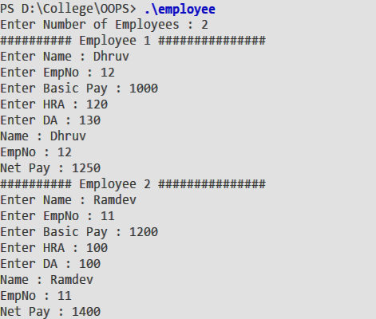

To write a program to create a class
employee
with following specifications :
calculate()
: A member function to net salary
havedata()
: A member function to accept values
displaydata()
: A member function to display all data members
The building block of C++ that leads to Object Oriented programming is a
class
. It is a user defined data type, which holds its own data members and member functions, which can be accessed and used by creating an instance of that class. A class is like a blueprint for an object. An object is an instance of a Class. When a class is defined, no memory is allocated but when it is instantiated (i.e. an object is created) memory is allocated. The public data members are also accessed in the same way given however the private data members are not allowed to be accessed directly by the object. Accessing a data member depends solely on the access control of that data member. This access control is given by Access modifiers in C++. There are three access modifiers : public, private and protected. The member functions defined inside the class are inline functions and declared outside are treated as normal functions.
// Class Declaration
class name{
private:
//data members and member functions
public:
//data members and member functions
protected:
//data members and member functions
};
// Object Declaration
name object;
#include <iostream>
// #include <string>
using namespace::std;
class Employee {
char name[50] ;
int empno ;
float basic ;
float hra ;
float da ;
float netpay ;
float calculate() {
return basic + da + hra ;
}
public :
void havedata() {
cout << "Enter Name : " ;
cin >> name ;
cout << "Enter EmpNo : " ;
cin >> empno ;
cout << "Enter Basic Pay : " ;
cin >> basic ;
cout << "Enter HRA : " ;
cin >> hra ;
cout << "Enter DA : " ;
cin >> da ;
netpay = calculate() ;
}
void displaydata() {
cout << "Name : " << name << endl ;
cout << "EmpNo : " << empno << endl ;
cout << "Net Pay : " << netpay << endl ;
}
};
int main () {
int n ;
cout << "Enter Number of Employees : " ;
cin >> n ;
Employee emp[n] ;
int i = 0 ;
while(i < n) {
cout << "##### Employee " << i+1 << " ######" << endl ;
emp[i].havedata() ;
emp[i++].displaydata() ;
}
return 0 ;
}

In the above program we have created a class
Employee
in which number, name and salary are data member and there are two member function for input and output. Now in the
main
program we have created an array of objects which means we have created a number of objects with each object can be represented as an empty which stores the info of each employee and ask user to enter the info of each
employee. Thus, displaying information of each employee as shown in output.
By studying classes, we learnt the following things: -
Classes contain, data members and member functions, and the access of these data members and variable depends on the access specifiers .
Class member functions can be defined inside the class definition or outside the class definition.